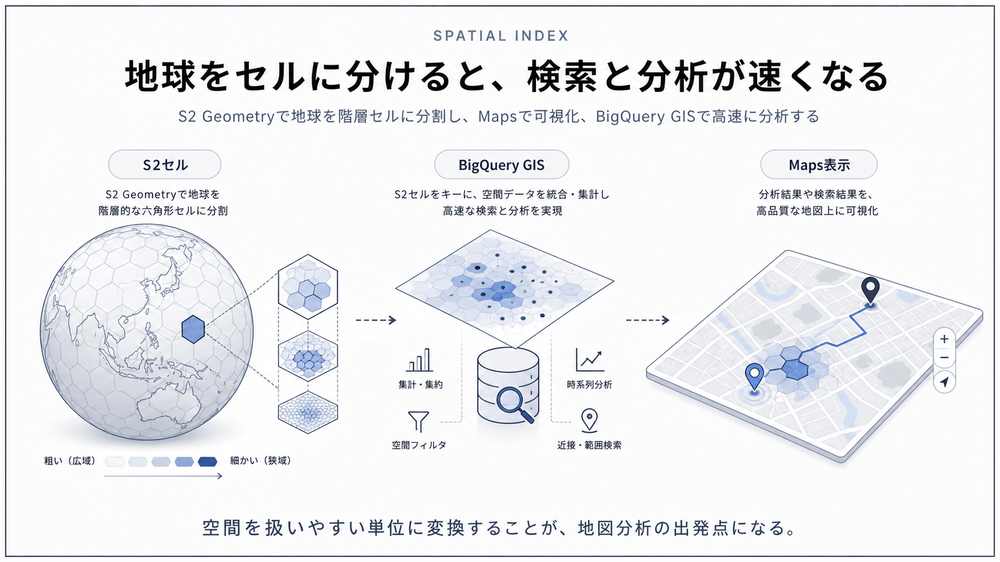
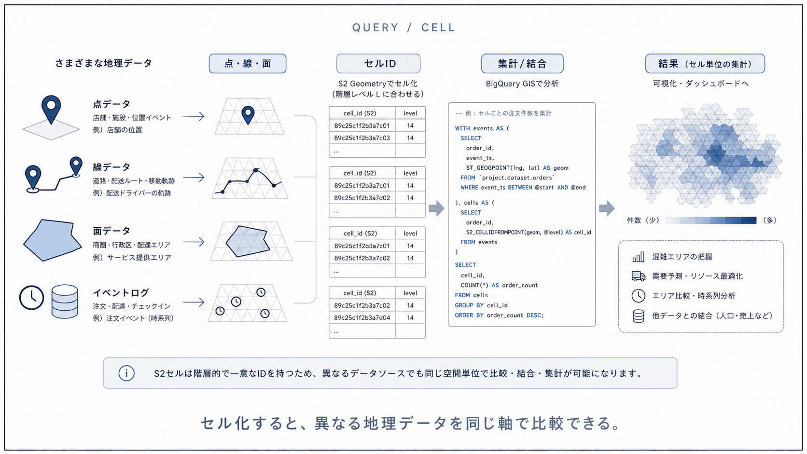
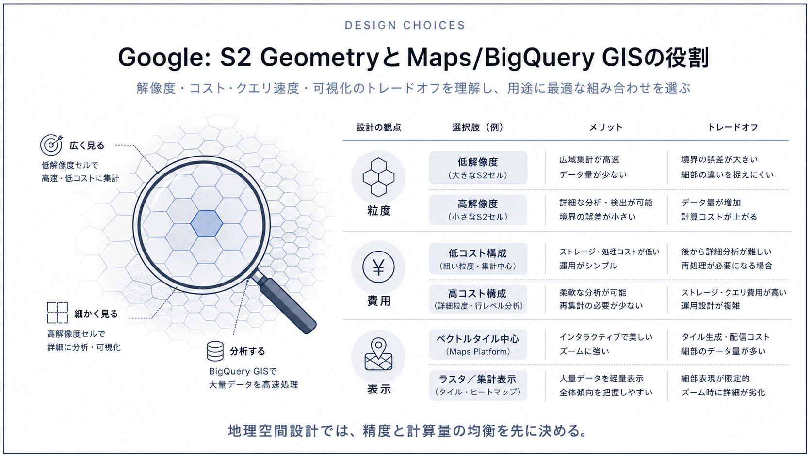

Question Note / Geospatial Architecture
Google: S2 GeometryとMaps/BigQuery GISの役割

何をしている企業か
検索、地図、クラウド、広告、Androidなどで地理情報を大規模に扱う企業。地球規模の検索、地図表示、分析、経路案内を複数プロダクトで提供している。
位置情報で解いている課題
球面上の距離、領域、包含、近傍を、世界規模で一貫して扱う必要がある。平面前提の単純な格子では、極や日付変更線、広域ポリゴンの扱いで破綻しやすい。

公開されている技術情報
- S2 Geometry GitHub Repository
- BigQuery geospatial analytics documentation
- Google Maps Platform Documentation
使っている地理空間技術
S2 Geometryは球面をセルへ分割して扱うライブラリ。BigQuery GISは地理空間データ型とSQL関数で分析を行うサービス。Google Maps Platformは表示、検索、ルート、PlacesなどのAPIを提供する。
「独自GIS」と呼べる部分
独自GIS的な部分は、S2のような球面セル表現、膨大な地図・場所データ、検索・ルーティング・分析基盤をプロダクト横断で扱う点。公開OSSだけでGoogle Maps全体を再現できるわけではない。
PostGISとの違い
PostGISはアプリDB内で形状演算をする。S2は地球表面のセル表現で、インデックスや領域近似に向く。BigQuery GISは分析基盤であり、アプリの低レイテンシDBとは用途が違う。
アーキテクチャ上どこに入るか
Mobile App
↓
Backend API
↓
Geospatial Engine / Index
↓
DB / Cache
↓
Map / Navigation APIこの図でいう Geospatial Engine / Index が、空間インデックス、ルーティング、ETA、マッチング、リアルタイム位置キャッシュを吸収する場所です。PostGISは主に DB / Cache 側の保存・検索基盤として使い、Mapbox等の地図APIは Map / Navigation API 側に置きます。
トラックナビアプリに応用できる点
トラックナビでは、広域エリア判定や地理セルの考え方を学ぶ価値がある。ただしMVPはPostGISで拠点・休憩所・規制ポリゴンを扱い、地図と経路はMapbox等のAPIに任せる。
まだ真似しなくてよい点
Google級の地図生成、Places相当の検索、全地球スケールのセル基盤は作らない。
将来スケールしたときに参考になる点
広域集計、配送圏、ジオフェンス、地域別分析が増えたら、S2/H3的なセル設計を分析基盤へ導入する。
結論
Googleの事例は、独自GISを「巨大な地図DB」ではなく、空間インデックス、ルーティング、ETA、マッチング、リアルタイム位置キャッシュ、分析基盤の組み合わせとして読むと理解しやすいです。トラックナビMVPでは、まずPostgreSQL + PostGIS + Mapboxで実用範囲を作り、後からH3/S2/Redis GEO/独自インデックスを足す順番が安全です。
